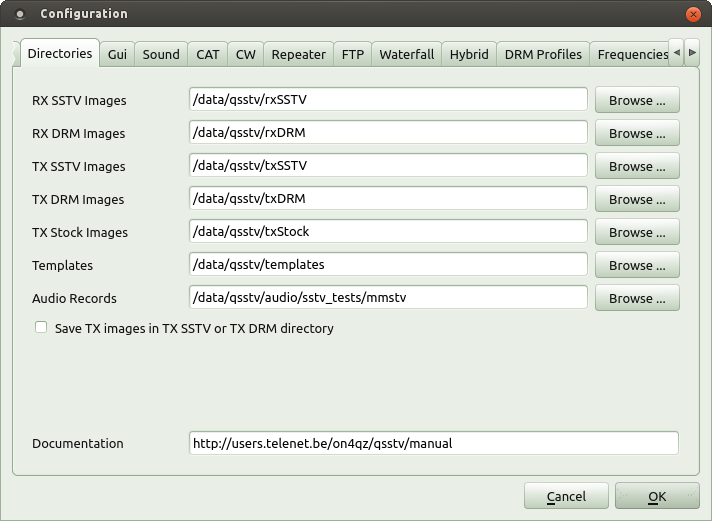
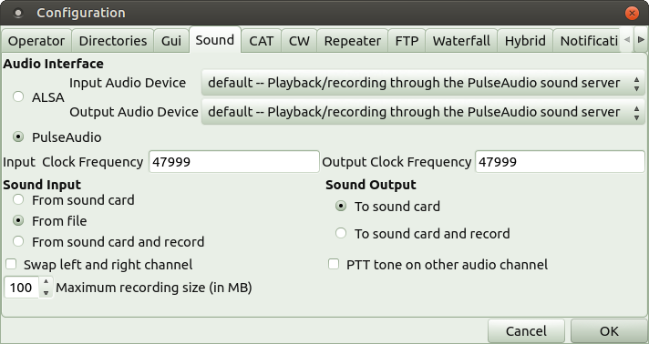
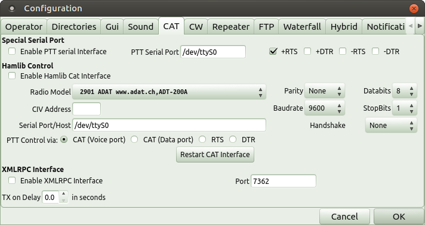
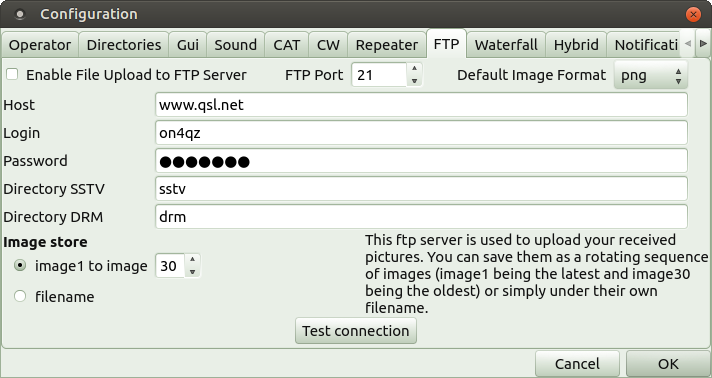

The program is build around 3 windows
- Receive window: Receive functions and configuration
- Transmit window: Transmit functions and camera control
- Gallery window: History of received images, transmit images and templates The program will remember the last position and the size of each window on restart.
Configuration
Before we can use QSSTV you need to do some configuration.
The configuration tool is accessed through the "Options" menu in the receive window. The following tabs are available
- Personal Settings

- Call sign
- First Name
- Last Name
- QTH
- Locator (Grid Square)
This information can also be used in templates (see also Editor)
- Directories

- RX SSTV Images: directory for saving the SSTV received images
- RX DRM Images: directory for saving the DRM received images
- TX Images: directory for images to transmit
- Templates: directory where the template files are stored
- Audio Records: directory for audio files (where you save/read recorded audio files)
- Documentation: URL of the user manual (if you copied the manual locally then you can point to it with e.g. file:///usr/share/doc/qsstv/manual
- Gui

- Stretch: if checked, the image will fill the receive window (keeping the aspect ratio) else it will be displayed as is.
- Background Colour: colour used for image borders and background in the gallery
- Image Background Colour: Default image background Push the push button to select the colour selector.
- Gallery: Rows and columns: set-up the number of rows and columns to be used in the Gallery tab. If you're running on a slow CPU (like on a Raspberry Pi) select row=1 and columns=1.
- Slow CPU: Select this option if you're running on a slow CPU (e.g. Rapsberry Pi)
- Low Resolution: Select this option if your display is for example 800x480. This options sets the maximum vertical resolution of QSSTV to less than 480 lines. It therefore removes some features from the receive window (Rx Notification Window in DRM) and the transmit window (Image replay Preview and TX Notifications in DRM mode). You can toggle to and from full screen by using the CTRL_F key combination.
- Audio

- ALSA Input Audio Device : depending on your hardware (e.g. default,hw:0,0)
- ALSA Output Audio Device : depending on your hardware (e.g. default,hw:0,0)
- PulseAudio: native pulse audio interface
Note: Most distributions use Pulse Audio interface.. You can select the audio card settings through the audio applet by right clicking on the Speaker icon and selecting the Sound Preferences - RX Clock frequency : clock used while receiving SSTV images,(see also Calibration)
- TX Clock frequency : clock used while transmitting SSTV images,(see also Calibration)
- Sound Input routing
- From sound card: default mode
- From file: decode a previously recorded file
- From sound card and record: decode and record to a file (wav type, stereo 48000)
- Maximum recording size: limits the size of the recorded file
- Sound Output routing
- To sound card: default
- Playback: playback a wav-file (use 48000 samples per second recording in mono or stereo)
- Playback and record: playback the sound and record at the same time.
- Swap left and right channel
- If selected, audio will be sent on the right audio channel instead of the left channel (e.g Kenwood tranceivers using USB sound interfaces)
- PTT tone on other audio channel
- A tone will be sent on the right channel to enable PTT. If the above "Swap left and right channel" is selected, it will be sent on the left channel.
Note: To playback an audio file, be sure the format is of type wav and has a samplerate of 48000 samples/second. You can always open the file with audacity and export the file to adapt the type and/or samplerate
- A tone will be sent on the right channel to enable PTT. If the above "Swap left and right channel" is selected, it will be sent on the left channel.
- CAT

- Special Serial Port: If you have a separate serial interface to control the PTT you can enable Special Serial Port to control it. You can select RTS and or DTR in inverted or non-inverted mode (i.e. +RTS will assert RTS at +12V when the PTT is active and -RTS will assert RTS at -12V). +RTS and/or +DTR is used most of the time. The same goes for DTR.
You cannot select both +RTS and -RTS or +DTR and -DTR at the same time. - Enable Hamlib Cat Interface
- Radio Model: drop down list from the radio models
- CIV Address: only used for ICOM, if left empty, the default address of the radio will be used
- Serial Port/host: either the serial port (e.g. /dev/ttyUSB0) or the host address (e.g. localhost:4532)
- Handshake, Parity, Data bits, Stop bits, Baud rate: serial port settings
- PTT Serial Port: serial port (e.g. /dev/ttyS0) only used if "Enable PTT serial Interface" is selected
- PTT Control via: If the radio uses a CAT command to activate Transmission then select "CAT". If you have a radio that does not support such a CAT command, you can let Hamlib use the RTS or DTR on the serial port specified by "PTT Serial Port".
- There are 2 CAT ports: -CAT (voice port): the normal setting -CAT (data port): to be used with some kenwood tranceivers(e.g. kenwood TS-480) to force data port instead of audio port (source: David VK3DCU) Example: IC-706MKIIG via a cat interface such as interfaceOne.
- Enable XMLRPC This allows you to connect to the Flrig program using the XMLRPC protocol. Flrig will handle all the communication with the transceiver (including PTT).
- TX Delay: The program will wait for the selected delay before transmitting any audio.
Note: The option Enable XMLRPC excludes the use of hamlib.
A sample set-up of Flrig is shown below.

- CW

- Tone: frequency of the CW tone
- Words per Minute: CW transmission speed
- Text To Send: this text will be send at the end of an image transmission if the option is enabled.
- Repeater

- Enable repeater: enable repeater operation
- Image Interval (min): interval time before sending one of the Idle Images
- Repeater TX mode: the mode the repeater will use to send the images
- Idle Image[1-4]: images send by the repeater if there is no activity for more than the interval time
- Idle Template:template that will be super-imposed on the idle images
- Repeater Template: template that will be super-imposed on the repeated(received) images
- FTP

This is used to save the received images to an FTP server. The images will also still be saved in the local rx folder.- Enable FTP: enable ftp operation
- FTP Port: default 21
- Default Image Format: select the image format from the drop down bow (used only in SSTV)
- Remote Hostname: hostname of the ftp server (e.g. myftp.home.net or 192.168.0.1)
- Remote directory:the ftp server directory where you'll store the images
- FTP Login name: your login name on the server (can be anonymous)
- FTP Password: if you need one, otherwise leave blank
- Image store:
- Image1 - image30: The files will be saved under the generic name imageXX, where xx ranges from 1 to 30. When a new image arrives, the old images are shifted down (i.e. image29 becomes image30, image28 becomes image 29 etc ..) and the new one is stored as image1. -file name: the image (or other type of file) is stored with a file name derived from the mode (SSTV) or from the file name transmitted in DRM.
Note: This FTP server is unrelated to the FTP server for Hybrid Mode.
You can test the connection by clicking the Test connection button. It will set-up a connection to the server and send a test file to check if all parameters are correct. You will either see a pop-up with "Connection OK" or an error message showing the reason of the fail.
- Waterfall

- Start Pic: Waterfall text to send at the beginning of a DRM transmission
- End Pic: Waterfall text to send at the end of a DRM transmission
- FIX: Waterfall text to send at the beginning of a DRM retransmission
- BSR: Waterfall text to send at the beginning of a DRM request for retransmission
Note: you can also use %m. This will be replaced by your call sign
- Hybrid

- Enable Reception in Hybrid Mode: allows reception of hamDRM in hybrid mode. If this is not enabled, hybrid mode files will not be shown or stored.
- FTP Port: default 21 (cannot be modified at this moment for compatibility with EasyPal)
- Remote Hostname: hostname of your ftp server
- Remote directory:the ftp server directory where the stored images are
- FTP Login name: the login name on the server
- FTP Password: will be encrypted
Login name, password,hostname and directories will be encrypted before being sent on the air.
If you want to use the special server, the directories to store images is relative to the directory HybridFiles1. So first create a top level directory HybridFiles1. If you leave the Remote Directory empty, then the files will be placed in the directory HybridFiles1. If you put for example "testdir" in the Remote Directory (as shown in the above screen shot), then you need to create testdir under HybridFiles (HybridFiles1/testdir).
QSSTV will not create those directories for you.
EasyPal also use two other directories on the same level as HybridFiles1
- OnlineCallsigns1
- RxOkNotifications1
You can create them on your server but they are not used by QSSTV at this moment.
You can test the connection by clicking the Test connection button. It will setup a connection to the server and send a test file to check if all parameters are correct. You will either see a pop-up with "Connection OK" or an error message showing the reason of the fail.
- DRM Profiles

Used for quick selection of the most common settings you use in DRM. Choose a short name for the profile and make a selection for all the parameters. The name will appear in the Profiles drop-down box in the Transmit window for DRM.
- Frequencies

- List of selectable frequencies. Click Add to add a new combo frequency/mode/modulation. Enter the frequency and select the mode and modulation type.
To move a frequency/mode/modulation up or down the list, click first on the entry in the table and then click on one of the arrow buttons. - Hamlib Data Command: (only used with Hamlib) As far a I know Hamlib does not support switching the Icomxxx to data mode. As a result, if you for example selected USB-D1 on a Icom 7600,changing the frequency will switch the rig back to the regular USB (data mode off).
Hamlib Data Command allows you to send a "raw command" that will be executed when you change frequencies. - Example: FEFE7AE01A060101FD and Hex button checked: will put the Icom in data mode D1 (LSB, USB or FM) and the Filter 1.
- Hex: if checked the text is interpreted as hex values else it will be interpreted as a regular ASCII string.
- Note 1: you can put any valid raw command here, it will be send on every frequency change
- Note 2: Flrig does not support FM data modes.
- List of selectable frequencies. Click Add to add a new combo frequency/mode/modulation. Enter the frequency and select the mode and modulation type.
Calibration
Note: Calibration is only needed for SSTV mode All SSTV applications need an accurate and stable clock. The accuracy of a PC clock is not always correct. Therefore it's necessary to execute some sort of calibration. You need to synchronize your PC with an network time server via the ntp protocol. Every Linux distribution has some configuration tool that allows you to install the ntp client. Be sure it's active. You can check it with:
>ntpdc -p
The selected ntp server should have an asterisk in the first column.
remote local st poll reach delay offset disp ======================================================================= *stratum1dc1.bc 10.119.37.19 2 64 377 0.00386 0.036853 0.06850
You can now launch the Calibration.
It will take several minutes to complete. Be sure to wait long enough, the progress is extremely slow

When RX and TX calibration is finished, press the OK button to accept the new values.
- Note: You can always enter the clock values manually.